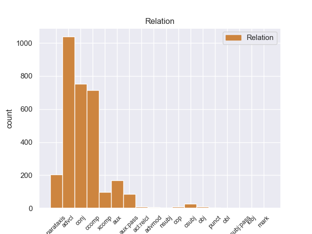
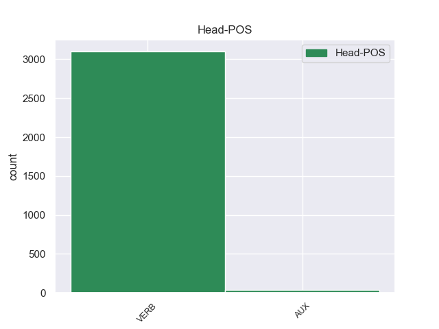
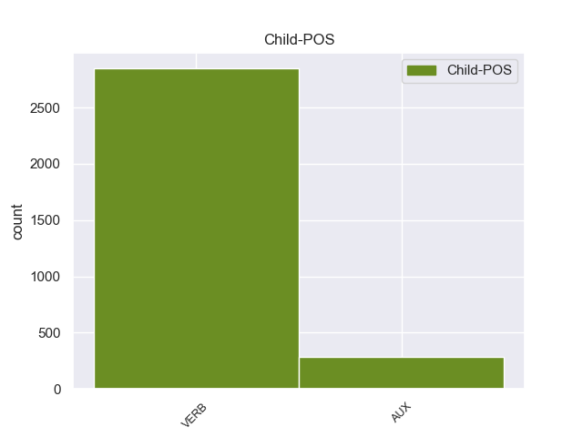

Distribution of features within this leaf



Agreement Rules sorted by frequency.
- When the dependent token is the adverbial clause modifier(advcl) of the head token,
1 La _ _ _ _ 0 _ _ _
2 hidrocefalia _ _ _ _ 0 _ _ _
3 comunicante _ _ _ _ 0 _ _ _
4 ocurre ocurrir VERB _ Mood=Ind|Number=Sing|Person=3|Tense=Pres|VerbForm=Fin 0 _ _ _
5 cuando _ _ _ _ 0 _ _ _
6 el _ _ _ _ 0 _ _ _
7 flujo _ _ _ _ 0 _ _ _
8 de _ _ _ _ 0 _ _ _
9 el _ _ _ _ 0 _ _ _
10 líquido _ _ _ _ 0 _ _ _
11 cefaloraquídeo _ _ _ _ 0 _ _ _
12 se _ _ _ _ 0 _ _ _
13 ve ver VERB _ Mood=Ind|Number=Sing|Person=3|Tense=Pres|VerbForm=Fin 4 advcl _ _
14 bloqueado _ _ _ _ 0 _ _ _
15 después _ _ _ _ 0 _ _ _
16 de _ _ _ _ 0 _ _ _
17 salir _ _ _ _ 0 _ _ _
18 de _ _ _ _ 0 _ _ _
19 los _ _ _ _ 0 _ _ _
20 ventrículos _ _ _ _ 0 _ _ _
21 a _ _ _ _ 0 _ _ _
22 el _ _ _ _ 0 _ _ _
23 espacio _ _ _ _ 0 _ _ _
24 subaracnoideo _ _ _ _ 0 _ _ _
25 . _ _ _ _ 0 _ _ _
1 El _ _ _ _ 0 _ _ _
2 12 _ _ _ _ 0 _ _ _
3 de _ _ _ _ 0 _ _ _
4 noviembre _ _ _ _ 0 _ _ _
5 el _ _ _ _ 0 _ _ _
6 Instituto _ _ _ _ 0 _ _ _
7 Nacional _ _ _ _ 0 _ _ _
8 de _ _ _ _ 0 _ _ _
9 Migración _ _ _ _ 0 _ _ _
10 detuvo _ _ _ _ 0 _ _ _
11 a _ _ _ _ 0 _ _ _
12 164 _ _ _ _ 0 _ _ _
13 indocumentados _ _ _ _ 0 _ _ _
14 centroamericanos _ _ _ _ 0 _ _ _
15 ( _ _ _ _ 0 _ _ _
16 159 _ _ _ _ 0 _ _ _
17 guatemaltecos _ _ _ _ 0 _ _ _
18 y _ _ _ _ 0 _ _ _
19 5 _ _ _ _ 0 _ _ _
20 hondureños _ _ _ _ 0 _ _ _
21 ) _ _ _ _ 0 _ _ _
22 a _ _ _ _ 0 _ _ _
23 bordo _ _ _ _ 0 _ _ _
24 de _ _ _ _ 0 _ _ _
25 un _ _ _ _ 0 _ _ _
26 tráiler _ _ _ _ 0 _ _ _
27 procedente _ _ _ _ 0 _ _ _
28 de _ _ _ _ 0 _ _ _
29 Comitán _ _ _ _ 0 _ _ _
30 de _ _ _ _ 0 _ _ _
31 Domínguez _ _ _ _ 0 _ _ _
32 , _ _ _ _ 0 _ _ _
33 que _ _ _ _ 0 _ _ _
34 transportaba transportar VERB _ Mood=Ind|Number=Sing|Person=3|Tense=Imp|VerbForm=Fin 0 _ _ _
35 500 _ _ _ _ 0 _ _ _
36 cajas _ _ _ _ 0 _ _ _
37 de _ _ _ _ 0 _ _ _
38 sopa _ _ _ _ 0 _ _ _
39 instantánea _ _ _ _ 0 _ _ _
40 y _ _ _ _ 0 _ _ _
41 que _ _ _ _ 0 _ _ _
42 circulaba circular VERB _ Mood=Ind|Number=Sing|Person=3|Tense=Imp|VerbForm=Fin 34 conj _ _
43 con _ _ _ _ 0 _ _ _
44 la _ _ _ _ 0 _ _ _
45 leyenda _ _ _ _ 0 _ _ _
46 : _ _ _ _ 0 _ _ _
47 " _ _ _ _ 0 _ _ _
48 Ayuda _ _ _ _ 0 _ _ _
49 para _ _ _ _ 0 _ _ _
50 nuestros _ _ _ _ 0 _ _ _
51 hermanos _ _ _ _ 0 _ _ _
52 de _ _ _ _ 0 _ _ _
53 Tabasco _ _ _ _ 0 _ _ _
54 " _ _ _ _ 0 _ _ _
55 . _ _ _ _ 0 _ _ _
1 La _ _ _ _ 0 _ _ _
2 publicación _ _ _ _ 0 _ _ _
3 estima estimar VERB _ Mood=Ind|Number=Sing|Person=3|Tense=Pres|VerbForm=Fin 0 _ _ _
4 que _ _ _ _ 0 _ _ _
5 Stewart _ _ _ _ 0 _ _ _
6 , _ _ _ _ 0 _ _ _
7 que _ _ _ _ 0 _ _ _
8 además _ _ _ _ 0 _ _ _
9 es _ _ _ _ 0 _ _ _
10 la _ _ _ _ 0 _ _ _
11 actriz _ _ _ _ 0 _ _ _
12 más _ _ _ _ 0 _ _ _
13 joven _ _ _ _ 0 _ _ _
14 de _ _ _ _ 0 _ _ _
15 la _ _ _ _ 0 _ _ _
16 lista _ _ _ _ 0 _ _ _
17 , _ _ _ _ 0 _ _ _
18 ingresó ingresar VERB _ Mood=Ind|Number=Sing|Person=3|Tense=Past|VerbForm=Fin 3 ccomp _ _
19 25 _ _ _ _ 0 _ _ _
20 millones _ _ _ _ 0 _ _ _
21 de _ _ _ _ 0 _ _ _
22 dólares _ _ _ _ 0 _ _ _
23 por _ _ _ _ 0 _ _ _
24 encarnar _ _ _ _ 0 _ _ _
25 a _ _ _ _ 0 _ _ _
26 Bella _ _ _ _ 0 _ _ _
27 Swan _ _ _ _ 0 _ _ _
28 en _ _ _ _ 0 _ _ _
29 las _ _ _ _ 0 _ _ _
30 últimas _ _ _ _ 0 _ _ _
31 dos _ _ _ _ 0 _ _ _
32 entregas _ _ _ _ 0 _ _ _
33 de _ _ _ _ 0 _ _ _
34 la _ _ _ _ 0 _ _ _
35 saga _ _ _ _ 0 _ _ _
36 ( _ _ _ _ 0 _ _ _
37 12,5 _ _ _ _ 0 _ _ _
38 millones _ _ _ _ 0 _ _ _
39 por _ _ _ _ 0 _ _ _
40 cada _ _ _ _ 0 _ _ _
41 una _ _ _ _ 0 _ _ _
42 ) _ _ _ _ 0 _ _ _
43 , _ _ _ _ 0 _ _ _
44 dirigidas _ _ _ _ 0 _ _ _
45 por _ _ _ _ 0 _ _ _
46 Bill _ _ _ _ 0 _ _ _
47 Condon _ _ _ _ 0 _ _ _
48 . _ _ _ _ 0 _ _ _
1 La _ _ _ _ 0 _ _ _
2 firma _ _ _ _ 0 _ _ _
3 de _ _ _ _ 0 _ _ _
4 este _ _ _ _ 0 _ _ _
5 acuerdo _ _ _ _ 0 _ _ _
6 provocó provocar VERB _ Mood=Ind|Number=Sing|Person=3|Tense=Past|VerbForm=Fin 0 _ _ _
7 una _ _ _ _ 0 _ _ _
8 ruptura _ _ _ _ 0 _ _ _
9 interna _ _ _ _ 0 _ _ _
10 en _ _ _ _ 0 _ _ _
11 Andecha _ _ _ _ 0 _ _ _
12 Astur _ _ _ _ 0 _ _ _
13 , _ _ _ _ 0 _ _ _
14 y _ _ _ _ 0 _ _ _
15 uno _ _ _ _ 0 _ _ _
16 de _ _ _ _ 0 _ _ _
17 los _ _ _ _ 0 _ _ _
18 sectores _ _ _ _ 0 _ _ _
19 se _ _ _ _ 0 _ _ _
20 presenta _ _ _ _ 0 _ _ _
21 igualmente _ _ _ _ 0 _ _ _
22 a _ _ _ _ 0 _ _ _
23 las _ _ _ _ 0 _ _ _
24 elecciones _ _ _ _ 0 _ _ _
25 utilizando _ _ _ _ 0 _ _ _
26 el _ _ _ _ 0 _ _ _
27 nombre _ _ _ _ 0 _ _ _
28 Andecha _ _ _ _ 0 _ _ _
29 Astur _ _ _ _ 0 _ _ _
30 , _ _ _ _ 0 _ _ _
31 lo _ _ _ _ 0 _ _ _
32 que _ _ _ _ 0 _ _ _
33 provoca provocar VERB _ Mood=Ind|Number=Sing|Person=3|Tense=Pres|VerbForm=Fin 6 parataxis _ _
34 una _ _ _ _ 0 _ _ _
35 disputa _ _ _ _ 0 _ _ _
36 legal _ _ _ _ 0 _ _ _
37 que _ _ _ _ 0 _ _ _
38 aún _ _ _ _ 0 _ _ _
39 no _ _ _ _ 0 _ _ _
40 ha _ _ _ _ 0 _ _ _
41 sido _ _ _ _ 0 _ _ _
42 resuelta _ _ _ _ 0 _ _ _
43 . _ _ _ _ 0 _ _ _
1 Es _ _ _ _ 0 _ _ _
2 difícil _ _ _ _ 0 _ _ _
3 practicar _ _ _ _ 0 _ _ _
4 esa _ _ _ _ 0 _ _ _
5 política _ _ _ _ 0 _ _ _
6 moderada _ _ _ _ 0 _ _ _
7 , _ _ _ _ 0 _ _ _
8 lenta _ _ _ _ 0 _ _ _
9 en _ _ _ _ 0 _ _ _
10 sus _ _ _ _ 0 _ _ _
11 resultados _ _ _ _ 0 _ _ _
12 , _ _ _ _ 0 _ _ _
13 que _ _ _ _ 0 _ _ _
14 debe _ _ _ _ 0 _ _ _
15 ser _ _ _ _ 0 _ _ _
16 realizada _ _ _ _ 0 _ _ _
17 aquí _ _ _ _ 0 _ _ _
18 y _ _ _ _ 0 _ _ _
19 ahora _ _ _ _ 0 _ _ _
20 , _ _ _ _ 0 _ _ _
21 si _ _ _ _ 0 _ _ _
22 presentamos _ _ _ _ 0 _ _ _
23 a _ _ _ _ 0 _ _ _
24 los _ _ _ _ 0 _ _ _
25 ciudadanos _ _ _ _ 0 _ _ _
26 de _ _ _ _ 0 _ _ _
27 Europa _ _ _ _ 0 _ _ _
28 este _ _ _ _ 0 _ _ _
29 tipo _ _ _ _ 0 _ _ _
30 de _ _ _ _ 0 _ _ _
31 escenario _ _ _ _ 0 _ _ _
32 , _ _ _ _ 0 _ _ _
33 cuando _ _ _ _ 0 _ _ _
34 ellos _ _ _ _ 0 _ _ _
35 mismos mismo AUX _ Mood=Ind|Number=Plur|Person=1|Tense=Pres|VerbForm=Fin 36 aux _ _
36 tienen tener VERB _ Mood=Ind|Number=Plur|Person=3|Tense=Pres|VerbForm=Fin 0 _ _ _
37 miedo _ _ _ _ 0 _ _ _
38 de _ _ _ _ 0 _ _ _
39 perder _ _ _ _ 0 _ _ _
40 su _ _ _ _ 0 _ _ _
41 puesto _ _ _ _ 0 _ _ _
42 de _ _ _ _ 0 _ _ _
43 trabajo _ _ _ _ 0 _ _ _
44 . _ _ _ _ 0 _ _ _
1 El _ _ _ _ 0 _ _ _
2 Lyon _ _ _ _ 0 _ _ _
3 ha _ _ _ _ 0 _ _ _
4 asumido _ _ _ _ 0 _ _ _
5 la _ _ _ _ 0 _ _ _
6 marcha _ _ _ _ 0 _ _ _
7 de _ _ _ _ 0 _ _ _
8 uno _ _ _ _ 0 _ _ _
9 de _ _ _ _ 0 _ _ _
10 sus _ _ _ _ 0 _ _ _
11 jugadores _ _ _ _ 0 _ _ _
12 a _ _ _ _ 0 _ _ _
13 el _ _ _ _ 0 _ _ _
14 Málaga _ _ _ _ 0 _ _ _
15 que _ _ _ _ 0 _ _ _
16 es ser VERB _ Mood=Ind|Number=Sing|Person=3|Tense=Pres|VerbForm=Fin 0 _ _ _
17 quien _ _ _ _ 0 _ _ _
18 acometerá acometer VERB _ Mood=Ind|Number=Sing|Person=3|Tense=Fut|VerbForm=Fin 16 xcomp _ _
19 el _ _ _ _ 0 _ _ _
20 fichaje _ _ _ _ 0 _ _ _
21 de _ _ _ _ 0 _ _ _
22 Toulalan _ _ _ _ 0 _ _ _
23 , _ _ _ _ 0 _ _ _
24 un _ _ _ _ 0 _ _ _
25 jugador _ _ _ _ 0 _ _ _
26 que _ _ _ _ 0 _ _ _
27 seguramente _ _ _ _ 0 _ _ _
28 saldrá _ _ _ _ 0 _ _ _
29 rumbo _ _ _ _ 0 _ _ _
30 a _ _ _ _ 0 _ _ _
31 España _ _ _ _ 0 _ _ _
32 a _ _ _ _ 0 _ _ _
33 jugar _ _ _ _ 0 _ _ _
34 la _ _ _ _ 0 _ _ _
35 Liga _ _ _ _ 0 _ _ _
36 BBVA _ _ _ _ 0 _ _ _
37 . _ _ _ _ 0 _ _ _
1 La _ _ _ _ 0 _ _ _
2 pregunta _ _ _ _ 0 _ _ _
3 es ser AUX _ Mood=Ind|Number=Sing|Person=3|Tense=Pres|VerbForm=Fin 8 aux:pass _ SpaceAfter=No
4 , _ _ _ _ 0 _ _ _
5 pues _ _ _ _ 0 _ _ _
6 , _ _ _ _ 0 _ _ _
7 qué _ _ _ _ 0 _ _ _
8 hacen hacer VERB _ Mood=Ind|Number=Plur|Person=3|Tense=Pres|VerbForm=Fin 0 _ _ _
9 los _ _ _ _ 0 _ _ _
10 productores _ _ _ _ 0 _ _ _
11 agrícolas _ _ _ _ 0 _ _ _
12 a _ _ _ _ 0 _ _ _
13 el _ _ _ _ 0 _ _ _
14 respecto _ _ _ _ 0 _ _ _
15 . _ _ _ _ 0 _ _ _
1 Él _ _ _ _ 0 _ _ _
2 es _ _ _ _ 0 _ _ _
3 un _ _ _ _ 0 _ _ _
4 chico _ _ _ _ 0 _ _ _
5 que _ _ _ _ 0 _ _ _
6 vive _ _ _ _ 0 _ _ _
7 en _ _ _ _ 0 _ _ _
8 una _ _ _ _ 0 _ _ _
9 familia _ _ _ _ 0 _ _ _
10 acomodada _ _ _ _ 0 _ _ _
11 , _ _ _ _ 0 _ _ _
12 pero _ _ _ _ 0 _ _ _
13 cuando _ _ _ _ 0 _ _ _
14 se _ _ _ _ 0 _ _ _
15 reveló _ _ _ _ 0 _ _ _
16 los _ _ _ _ 0 _ _ _
17 últimos _ _ _ _ 0 _ _ _
18 deseos _ _ _ _ 0 _ _ _
19 de _ _ _ _ 0 _ _ _
20 su _ _ _ _ 0 _ _ _
21 abuelo _ _ _ _ 0 _ _ _
22 fallecido _ _ _ _ 0 _ _ _
23 en _ _ _ _ 0 _ _ _
24 el _ _ _ _ 0 _ _ _
25 testamento _ _ _ _ 0 _ _ _
26 que _ _ _ _ 0 _ _ _
27 dejó _ _ _ _ 0 _ _ _
28 , _ _ _ _ 0 _ _ _
29 se _ _ _ _ 0 _ _ _
30 descubrió descubrir VERB _ Mood=Ind|Number=Sing|Person=3|Tense=Past|VerbForm=Fin 0 _ _ _
31 que _ _ _ _ 0 _ _ _
32 él _ _ _ _ 0 _ _ _
33 tenía tener VERB _ Mood=Ind|Number=Sing|Person=3|Tense=Imp|VerbForm=Fin 30 csubj _ _
34 que _ _ _ _ 0 _ _ _
35 trasladar _ _ _ _ 0 _ _ _
36 se _ _ _ _ 0 _ _ _
37 a _ _ _ _ 0 _ _ _
38 una _ _ _ _ 0 _ _ _
39 escuela _ _ _ _ 0 _ _ _
40 sólo _ _ _ _ 0 _ _ _
41 de _ _ _ _ 0 _ _ _
42 chicas _ _ _ _ 0 _ _ _
43 , _ _ _ _ 0 _ _ _
44 a _ _ _ _ 0 _ _ _
45 la _ _ _ _ 0 _ _ _
46 misma _ _ _ _ 0 _ _ _
47 que _ _ _ _ 0 _ _ _
48 en _ _ _ _ 0 _ _ _
49 su _ _ _ _ 0 _ _ _
50 tiempo _ _ _ _ 0 _ _ _
51 fue _ _ _ _ 0 _ _ _
52 su _ _ _ _ 0 _ _ _
53 madre _ _ _ _ 0 _ _ _
54 y _ _ _ _ 0 _ _ _
55 que _ _ _ _ 0 _ _ _
56 fundó _ _ _ _ 0 _ _ _
57 sus _ _ _ _ 0 _ _ _
58 antecesores _ _ _ _ 0 _ _ _
59 . _ _ _ _ 0 _ _ _
1 Está _ _ _ _ 0 _ _ _
2 claro _ _ _ _ 0 _ _ _
3 que _ _ _ _ 0 _ _ _
4 es ser AUX _ Mood=Ind|Number=Sing|Person=3|Tense=Pres|VerbForm=Fin 7 cop _ _
5 allí _ _ _ _ 0 _ _ _
6 donde _ _ _ _ 0 _ _ _
7 radican radicar VERB _ Mood=Ind|Number=Plur|Person=3|Tense=Pres|VerbForm=Fin 0 _ _ _
8 muchos _ _ _ _ 0 _ _ _
9 de _ _ _ _ 0 _ _ _
10 los _ _ _ _ 0 _ _ _
11 problemas _ _ _ _ 0 _ _ _
12 , _ _ _ _ 0 _ _ _
13 en _ _ _ _ 0 _ _ _
14 particular _ _ _ _ 0 _ _ _
15 con _ _ _ _ 0 _ _ _
16 los _ _ _ _ 0 _ _ _
17 Fondos _ _ _ _ 0 _ _ _
18 estructurales _ _ _ _ 0 _ _ _
19 . _ _ _ _ 0 _ _ _
1 Si _ _ _ _ 0 _ _ _
2 continuamos _ _ _ _ 0 _ _ _
3 atascándonos _ _ _ _ 0 _ _ _
4 en _ _ _ _ 0 _ _ _
5 las _ _ _ _ 0 _ _ _
6 propuestas _ _ _ _ 0 _ _ _
7 que _ _ _ _ 0 _ _ _
8 hasta _ _ _ _ 0 _ _ _
9 la _ _ _ _ 0 _ _ _
10 fecha _ _ _ _ 0 _ _ _
11 han _ _ _ _ 0 _ _ _
12 dado _ _ _ _ 0 _ _ _
13 pésimos _ _ _ _ 0 _ _ _
14 resultados _ _ _ _ 0 _ _ _
15 , _ _ _ _ 0 _ _ _
16 no _ _ _ _ 0 _ _ _
17 sé saber VERB _ Mood=Ind|Number=Sing|Person=3|Tense=Pres|VerbForm=Fin 0 _ _ _
18 cómo _ _ _ _ 0 _ _ _
19 haremos harer AUX _ Mood=Ind|Number=Plur|Person=1|Tense=Pres|VerbForm=Fin 17 obj _ _
20 y _ _ _ _ 0 _ _ _
21 qué _ _ _ _ 0 _ _ _
22 podrá _ _ _ _ 0 _ _ _
23 hacer _ _ _ _ 0 _ _ _
24 la _ _ _ _ 0 _ _ _
25 Comisión _ _ _ _ 0 _ _ _
26 . _ _ _ _ 0 _ _ _
1 Siempre _ _ _ _ 0 _ _ _
2 he _ _ _ _ 0 _ _ _
3 sido _ _ _ _ 0 _ _ _
4 de _ _ _ _ 0 _ _ _
5 la _ _ _ _ 0 _ _ _
6 opinión _ _ _ _ 0 _ _ _
7 de _ _ _ _ 0 _ _ _
8 que _ _ _ _ 0 _ _ _
9 la _ _ _ _ 0 _ _ _
10 antigua _ _ _ _ 0 _ _ _
11 línea _ _ _ _ 0 _ _ _
12 consistente _ _ _ _ 0 _ _ _
13 en _ _ _ _ 0 _ _ _
14 decir _ _ _ _ 0 _ _ _
15 que _ _ _ _ 0 _ _ _
16 Chipre _ _ _ _ 0 _ _ _
17 solamente _ _ _ _ 0 _ _ _
18 sería _ _ _ _ 0 _ _ _
19 acogida _ _ _ _ 0 _ _ _
20 cuando _ _ _ _ 0 _ _ _
21 se _ _ _ _ 0 _ _ _
22 solucionase _ _ _ _ 0 _ _ _
23 el _ _ _ _ 0 _ _ _
24 conflicto _ _ _ _ 0 _ _ _
25 político _ _ _ _ 0 _ _ _
26 , _ _ _ _ 0 _ _ _
27 tiene tener VERB _ Mood=Ind|Number=Sing|Person=3|Tense=Pres|VerbForm=Fin 0 _ _ _
28 un _ _ _ _ 0 _ _ _
29 punto _ _ _ _ 0 _ _ _
30 flaco _ _ _ _ 0 _ _ _
31 consistente _ _ _ _ 0 _ _ _
32 en _ _ _ _ 0 _ _ _
33 que _ _ _ _ 0 _ _ _
34 no _ _ _ _ 0 _ _ _
35 ofrece ofrecer VERB _ Mood=Ind|Number=Sing|Person=3|Tense=Pres|VerbForm=Fin 27 acl:relcl _ _
36 ningún _ _ _ _ 0 _ _ _
37 estímulo _ _ _ _ 0 _ _ _
38 convincente _ _ _ _ 0 _ _ _
39 a _ _ _ _ 0 _ _ _
40 la _ _ _ _ 0 _ _ _
41 comunidad _ _ _ _ 0 _ _ _
42 turca _ _ _ _ 0 _ _ _
43 en _ _ _ _ 0 _ _ _
44 Chipre _ _ _ _ 0 _ _ _
45 para _ _ _ _ 0 _ _ _
46 que _ _ _ _ 0 _ _ _
47 participe _ _ _ _ 0 _ _ _
48 realmente _ _ _ _ 0 _ _ _
49 , _ _ _ _ 0 _ _ _
50 pues _ _ _ _ 0 _ _ _
51 con _ _ _ _ 0 _ _ _
52 esa _ _ _ _ 0 _ _ _
53 estrategia _ _ _ _ 0 _ _ _
54 la _ _ _ _ 0 _ _ _
55 comunidad _ _ _ _ 0 _ _ _
56 turca _ _ _ _ 0 _ _ _
57 no _ _ _ _ 0 _ _ _
58 necesitaría _ _ _ _ 0 _ _ _
59 hacer _ _ _ _ 0 _ _ _
60 otra _ _ _ _ 0 _ _ _
61 cosa _ _ _ _ 0 _ _ _
62 más _ _ _ _ 0 _ _ _
63 que _ _ _ _ 0 _ _ _
64 reclinar _ _ _ _ 0 _ _ _
65 se _ _ _ _ 0 _ _ _
66 de _ _ _ _ 0 _ _ _
67 espaldas _ _ _ _ 0 _ _ _
68 y _ _ _ _ 0 _ _ _
69 esperar _ _ _ _ 0 _ _ _
70 . _ _ _ _ 0 _ _ _
1 Señor _ _ _ _ 0 _ _ _
2 Presidente _ _ _ _ 0 _ _ _
3 , _ _ _ _ 0 _ _ _
4 me _ _ _ _ 0 _ _ _
5 he _ _ _ _ 0 _ _ _
6 abstenido _ _ _ _ 0 _ _ _
7 en _ _ _ _ 0 _ _ _
8 la _ _ _ _ 0 _ _ _
9 votación _ _ _ _ 0 _ _ _
10 sobre _ _ _ _ 0 _ _ _
11 la _ _ _ _ 0 _ _ _
12 iniciativa _ _ _ _ 0 _ _ _
13 EQUAL _ _ _ _ 0 _ _ _
14 también _ _ _ _ 0 _ _ _
15 en _ _ _ _ 0 _ _ _
16 mi _ _ _ _ 0 _ _ _
17 calidad _ _ _ _ 0 _ _ _
18 de _ _ _ _ 0 _ _ _
19 representante _ _ _ _ 0 _ _ _
20 de _ _ _ _ 0 _ _ _
21 el _ _ _ _ 0 _ _ _
22 Partido _ _ _ _ 0 _ _ _
23 de _ _ _ _ 0 _ _ _
24 los _ _ _ _ 0 _ _ _
25 Pensionistas _ _ _ _ 0 _ _ _
26 ante _ _ _ _ 0 _ _ _
27 el _ _ _ _ 0 _ _ _
28 Parlamento _ _ _ _ 0 _ _ _
29 Europeo _ _ _ _ 0 _ _ _
30 porque _ _ _ _ 0 _ _ _
31 , _ _ _ _ 0 _ _ _
32 a _ _ _ _ 0 _ _ _
33 pesar _ _ _ _ 0 _ _ _
34 de _ _ _ _ 0 _ _ _
35 que _ _ _ _ 0 _ _ _
36 introduce introducir VERB _ Mood=Ind|Number=Sing|Person=3|Tense=Pres|VerbForm=Fin 0 _ _ _
37 de _ _ _ _ 0 _ _ _
38 manera _ _ _ _ 0 _ _ _
39 más _ _ _ _ 0 _ _ _
40 significativa significativa AUX _ Mood=Ind|Number=Sing|Person=3|Tense=Pres|VerbForm=Fin 36 advmod _ _
41 que _ _ _ _ 0 _ _ _
42 antes _ _ _ _ 0 _ _ _
43 el _ _ _ _ 0 _ _ _
44 apoyo _ _ _ _ 0 _ _ _
45 a _ _ _ _ 0 _ _ _
46 los _ _ _ _ 0 _ _ _
47 proyectos _ _ _ _ 0 _ _ _
48 dirigidos _ _ _ _ 0 _ _ _
49 a _ _ _ _ 0 _ _ _
50 luchar _ _ _ _ 0 _ _ _
51 contra _ _ _ _ 0 _ _ _
52 la _ _ _ _ 0 _ _ _
53 discriminación _ _ _ _ 0 _ _ _
54 por _ _ _ _ 0 _ _ _
55 razón _ _ _ _ 0 _ _ _
56 de _ _ _ _ 0 _ _ _
57 edad _ _ _ _ 0 _ _ _
58 , _ _ _ _ 0 _ _ _
59 no _ _ _ _ 0 _ _ _
60 ha _ _ _ _ 0 _ _ _
61 sido _ _ _ _ 0 _ _ _
62 bastante _ _ _ _ 0 _ _ _
63 incisiva _ _ _ _ 0 _ _ _
64 y _ _ _ _ 0 _ _ _
65 concreta _ _ _ _ 0 _ _ _
66 a _ _ _ _ 0 _ _ _
67 el _ _ _ _ 0 _ _ _
68 respecto _ _ _ _ 0 _ _ _
69 . _ _ _ _ 0 _ _ _
1 Los _ _ _ _ 0 _ _ _
2 países _ _ _ _ 0 _ _ _
3 a _ _ _ _ 0 _ _ _
4 los _ _ _ _ 0 _ _ _
5 que _ _ _ _ 0 _ _ _
6 nos _ _ _ _ 0 _ _ _
7 referimos referir VERB _ Mood=Ind|Number=Plur|Person=1|Tense=Pres|VerbForm=Fin 0 _ _ _
8 se _ _ _ _ 0 _ _ _
9 desarrollan desarrollar VERB _ Mood=Ind|Number=Plur|Person=3|Tense=Pres|VerbForm=Fin 7 nsubj _ _
10 con _ _ _ _ 0 _ _ _
11 gran _ _ _ _ 0 _ _ _
12 velocidad _ _ _ _ 0 _ _ _
13 , _ _ _ _ 0 _ _ _
14 lo _ _ _ _ 0 _ _ _
15 que _ _ _ _ 0 _ _ _
16 también _ _ _ _ 0 _ _ _
17 nos _ _ _ _ 0 _ _ _
18 obliga _ _ _ _ 0 _ _ _
19 a _ _ _ _ 0 _ _ _
20 reaccionar _ _ _ _ 0 _ _ _
21 rápidamente _ _ _ _ 0 _ _ _
22 para _ _ _ _ 0 _ _ _
23 resolver _ _ _ _ 0 _ _ _
24 el _ _ _ _ 0 _ _ _
25 asunto _ _ _ _ 0 _ _ _
26 de _ _ _ _ 0 _ _ _
27 las _ _ _ _ 0 _ _ _
28 lenguas _ _ _ _ 0 _ _ _
29 , _ _ _ _ 0 _ _ _
30 antes _ _ _ _ 0 _ _ _
31 de _ _ _ _ 0 _ _ _
32 la _ _ _ _ 0 _ _ _
33 llegada _ _ _ _ 0 _ _ _
34 de _ _ _ _ 0 _ _ _
35 esos _ _ _ _ 0 _ _ _
36 nuevos _ _ _ _ 0 _ _ _
37 países _ _ _ _ 0 _ _ _
38 . _ _ _ _ 0 _ _ _
1 Nuestro _ _ _ _ 0 _ _ _
2 deseo _ _ _ _ 0 _ _ _
3 es ser AUX _ Mood=Ind|Number=Sing|Person=3|Tense=Pres|VerbForm=Fin 6 punct _ _
4 que _ _ _ _ 0 _ _ _
5 se _ _ _ _ 0 _ _ _
6 incluyan incluyar VERB _ Mood=Ind|Number=Plur|Person=3|Tense=Pres|VerbForm=Fin 0 _ _ _
7 también _ _ _ _ 0 _ _ _
8 en _ _ _ _ 0 _ _ _
9 Internet _ _ _ _ 0 _ _ _
10 , _ _ _ _ 0 _ _ _
11 de _ _ _ _ 0 _ _ _
12 forma _ _ _ _ 0 _ _ _
13 que _ _ _ _ 0 _ _ _
14 exista _ _ _ _ 0 _ _ _
15 la _ _ _ _ 0 _ _ _
16 máxima _ _ _ _ 0 _ _ _
17 transparencia _ _ _ _ 0 _ _ _
18 respecto _ _ _ _ 0 _ _ _
19 a _ _ _ _ 0 _ _ _
20 este _ _ _ _ 0 _ _ _
21 punto _ _ _ _ 0 _ _ _
22 concreto _ _ _ _ 0 _ _ _
23 . _ _ _ _ 0 _ _ _
1 Uno _ _ _ _ 0 _ _ _
2 de _ _ _ _ 0 _ _ _
3 los _ _ _ _ 0 _ _ _
4 grandes _ _ _ _ 0 _ _ _
5 misterios _ _ _ _ 0 _ _ _
6 de _ _ _ _ 0 _ _ _
7 sus _ _ _ _ 0 _ _ _
8 propuestas _ _ _ _ 0 _ _ _
9 sobre _ _ _ _ 0 _ _ _
10 la _ _ _ _ 0 _ _ _
11 revisión _ _ _ _ 0 _ _ _
12 es ser VERB _ Mood=Ind|Number=Sing|Person=3|Tense=Pres|VerbForm=Fin 0 _ _ _
13 de _ _ _ _ 0 _ _ _
14 dónde _ _ _ _ 0 _ _ _
15 procederá proceder VERB _ Mood=Ind|Number=Sing|Person=3|Tense=Fut|VerbForm=Fin 12 obl _ _
16 el _ _ _ _ 0 _ _ _
17 dinero _ _ _ _ 0 _ _ _
18 a _ _ _ _ 0 _ _ _
19 partir _ _ _ _ 0 _ _ _
20 de _ _ _ _ 0 _ _ _
21 2003 _ _ _ _ 0 _ _ _
22 . _ _ _ _ 0 _ _ _
1 Sobre _ _ _ _ 0 _ _ _
2 todo _ _ _ _ 0 _ _ _
3 , _ _ _ _ 0 _ _ _
4 el _ _ _ _ 0 _ _ _
5 debate _ _ _ _ 0 _ _ _
6 es _ _ _ _ 0 _ _ _
7 recordado _ _ _ _ 0 _ _ _
8 a _ _ _ _ 0 _ _ _
9 día _ _ _ _ 0 _ _ _
10 de _ _ _ _ 0 _ _ _
11 hoy _ _ _ _ 0 _ _ _
12 por _ _ _ _ 0 _ _ _
13 el _ _ _ _ 0 _ _ _
14 exaltado _ _ _ _ 0 _ _ _
15 intercambio _ _ _ _ 0 _ _ _
16 de _ _ _ _ 0 _ _ _
17 palabras _ _ _ _ 0 _ _ _
18 entre _ _ _ _ 0 _ _ _
19 el _ _ _ _ 0 _ _ _
20 Obispo _ _ _ _ 0 _ _ _
21 Wilberforce _ _ _ _ 0 _ _ _
22 y _ _ _ _ 0 _ _ _
23 Thomas _ _ _ _ 0 _ _ _
24 Henry _ _ _ _ 0 _ _ _
25 Huxley _ _ _ _ 0 _ _ _
26 , _ _ _ _ 0 _ _ _
27 donde _ _ _ _ 0 _ _ _
28 este _ _ _ _ 0 _ _ _
29 supuestamente _ _ _ _ 0 _ _ _
30 le _ _ _ _ 0 _ _ _
31 preguntó preguntar VERB _ Mood=Ind|Number=Sing|Person=3|Tense=Past|VerbForm=Fin 0 _ _ _
32 a _ _ _ _ 0 _ _ _
33 Huxley _ _ _ _ 0 _ _ _
34 que _ _ _ _ 0 _ _ _
35 si _ _ _ _ 0 _ _ _
36 creía _ _ _ _ 0 _ _ _
37 que _ _ _ _ 0 _ _ _
38 el _ _ _ _ 0 _ _ _
39 ser _ _ _ _ 0 _ _ _
40 humano _ _ _ _ 0 _ _ _
41 descendía _ _ _ _ 0 _ _ _
42 de _ _ _ _ 0 _ _ _
43 los _ _ _ _ 0 _ _ _
44 simios _ _ _ _ 0 _ _ _
45 , _ _ _ _ 0 _ _ _
46 en _ _ _ _ 0 _ _ _
47 su _ _ _ _ 0 _ _ _
48 caso _ _ _ _ 0 _ _ _
49 particular _ _ _ _ 0 _ _ _
50 ¿ _ _ _ _ 0 _ _ _
51 descendía descender VERB _ Mood=Ind|Number=Sing|Person=3|Tense=Imp|VerbForm=Fin 31 mark _ _
52 por _ _ _ _ 0 _ _ _
53 parte _ _ _ _ 0 _ _ _
54 de _ _ _ _ 0 _ _ _
55 madre _ _ _ _ 0 _ _ _
56 o _ _ _ _ 0 _ _ _
57 por _ _ _ _ 0 _ _ _
58 parte _ _ _ _ 0 _ _ _
59 de _ _ _ _ 0 _ _ _
60 padre _ _ _ _ 0 _ _ _
61 ? _ _ _ _ 0 _ _ _
1 No _ _ _ _ 0 _ _ _
2 voy ir VERB _ Mood=Ind|Number=Sing|Person=1|Tense=Pres|VerbForm=Fin 0 _ _ _
3 a _ _ _ _ 0 _ _ _
4 referirme _ _ _ _ 0 _ _ _
5 , _ _ _ _ 0 _ _ _
6 una _ _ _ _ 0 _ _ _
7 vez _ _ _ _ 0 _ _ _
8 más _ _ _ _ 0 _ _ _
9 , _ _ _ _ 0 _ _ _
10 a _ _ _ _ 0 _ _ _
11 cómo _ _ _ _ 0 _ _ _
12 afronta afrontar VERB _ Mood=Ind|Number=Sing|Person=3|Tense=Pres|VerbForm=Fin 2 iobj _ _
13 la _ _ _ _ 0 _ _ _
14 Unión _ _ _ _ 0 _ _ _
15 Europea _ _ _ _ 0 _ _ _
16 las _ _ _ _ 0 _ _ _
17 violaciones _ _ _ _ 0 _ _ _
18 flagrantes _ _ _ _ 0 _ _ _
19 de _ _ _ _ 0 _ _ _
20 los _ _ _ _ 0 _ _ _
21 derechos _ _ _ _ 0 _ _ _
22 humanos _ _ _ _ 0 _ _ _
23 en _ _ _ _ 0 _ _ _
24 Turquía _ _ _ _ 0 _ _ _
25 y _ _ _ _ 0 _ _ _
26 en _ _ _ _ 0 _ _ _
27 otros _ _ _ _ 0 _ _ _
28 lugares _ _ _ _ 0 _ _ _
29 , _ _ _ _ 0 _ _ _
30 las _ _ _ _ 0 _ _ _
31 infracciones _ _ _ _ 0 _ _ _
32 evidentes _ _ _ _ 0 _ _ _
33 de _ _ _ _ 0 _ _ _
34 estos _ _ _ _ 0 _ _ _
35 derechos _ _ _ _ 0 _ _ _
36 en _ _ _ _ 0 _ _ _
37 el _ _ _ _ 0 _ _ _
38 interior _ _ _ _ 0 _ _ _
39 de _ _ _ _ 0 _ _ _
40 la _ _ _ _ 0 _ _ _
41 Unión _ _ _ _ 0 _ _ _
42 Europea _ _ _ _ 0 _ _ _
43 , _ _ _ _ 0 _ _ _
44 ni _ _ _ _ 0 _ _ _
45 a _ _ _ _ 0 _ _ _
46 la _ _ _ _ 0 _ _ _
47 política _ _ _ _ 0 _ _ _
48 de _ _ _ _ 0 _ _ _
49 los _ _ _ _ 0 _ _ _
50 dos _ _ _ _ 0 _ _ _
51 pesos _ _ _ _ 0 _ _ _
52 y _ _ _ _ 0 _ _ _
53 las _ _ _ _ 0 _ _ _
54 dos _ _ _ _ 0 _ _ _
55 medidas _ _ _ _ 0 _ _ _
56 . _ _ _ _ 0 _ _ _
Disagree Examples:
1 Sin _ _ _ _ 0 _ _ _
2 embargo _ _ _ _ 0 _ _ _
3 , _ _ _ _ 0 _ _ _
4 lo _ _ _ _ 0 _ _ _
5 hago _ _ _ _ 0 _ _ _
6 en _ _ _ _ 0 _ _ _
7 aras _ _ _ _ 0 _ _ _
8 a _ _ _ _ 0 _ _ _
9 su _ _ _ _ 0 _ _ _
10 seguridad _ _ _ _ 0 _ _ _
11 , _ _ _ _ 0 _ _ _
12 no _ _ _ _ 0 _ _ _
13 sólo _ _ _ _ 0 _ _ _
14 en _ _ _ _ 0 _ _ _
15 aras _ _ _ _ 0 _ _ _
16 a _ _ _ _ 0 _ _ _
17 la _ _ _ _ 0 _ _ _
18 nuestra _ _ _ _ 0 _ _ _
19 , _ _ _ _ 0 _ _ _
20 porque _ _ _ _ 0 _ _ _
21 si _ _ _ _ 0 _ _ _
22 existiera existir VERB _ Mood=Sub|Number=Sing|Person=3|Tense=Imp|VerbForm=Fin 37 advcl _ _
23 la _ _ _ _ 0 _ _ _
24 mínima _ _ _ _ 0 _ _ _
25 sospecha _ _ _ _ 0 _ _ _
26 de _ _ _ _ 0 _ _ _
27 que _ _ _ _ 0 _ _ _
28 la _ _ _ _ 0 _ _ _
29 ampliación _ _ _ _ 0 _ _ _
30 se _ _ _ _ 0 _ _ _
31 realiza _ _ _ _ 0 _ _ _
32 de _ _ _ _ 0 _ _ _
33 forma _ _ _ _ 0 _ _ _
34 superficial _ _ _ _ 0 _ _ _
35 , _ _ _ _ 0 _ _ _
36 se _ _ _ _ 0 _ _ _
37 crearía crear VERB _ Mood=Cnd|Number=Sing|Person=3|VerbForm=Fin 0 _ _ _
38 una _ _ _ _ 0 _ _ _
39 opinión _ _ _ _ 0 _ _ _
40 pública _ _ _ _ 0 _ _ _
41 contraria _ _ _ _ 0 _ _ _
42 a _ _ _ _ 0 _ _ _
43 este _ _ _ _ 0 _ _ _
44 gran _ _ _ _ 0 _ _ _
45 movimiento _ _ _ _ 0 _ _ _
46 histórico _ _ _ _ 0 _ _ _
47 , _ _ _ _ 0 _ _ _
48 a _ _ _ _ 0 _ _ _
49 este _ _ _ _ 0 _ _ _
50 gran _ _ _ _ 0 _ _ _
51 acontecimiento _ _ _ _ 0 _ _ _
52 que _ _ _ _ 0 _ _ _
53 caracterizará _ _ _ _ 0 _ _ _
54 nuestra _ _ _ _ 0 _ _ _
55 acción _ _ _ _ 0 _ _ _
56 y _ _ _ _ 0 _ _ _
57 que _ _ _ _ 0 _ _ _
58 da _ _ _ _ 0 _ _ _
59 un _ _ _ _ 0 _ _ _
60 sentido _ _ _ _ 0 _ _ _
61 moral _ _ _ _ 0 _ _ _
62 a _ _ _ _ 0 _ _ _
63 la _ _ _ _ 0 _ _ _
64 política _ _ _ _ 0 _ _ _
65 que _ _ _ _ 0 _ _ _
66 estamos _ _ _ _ 0 _ _ _
67 construyendo _ _ _ _ 0 _ _ _
68 . _ _ _ _ 0 _ _ _
1 Señor _ _ _ _ 0 _ _ _
2 Presidente _ _ _ _ 0 _ _ _
3 , _ _ _ _ 0 _ _ _
4 señoras _ _ _ _ 0 _ _ _
5 y _ _ _ _ 0 _ _ _
6 señores _ _ _ _ 0 _ _ _
7 diputados _ _ _ _ 0 _ _ _
8 , _ _ _ _ 0 _ _ _
9 señor _ _ _ _ 0 _ _ _
10 Comisario _ _ _ _ 0 _ _ _
11 , _ _ _ _ 0 _ _ _
12 el _ _ _ _ 0 _ _ _
13 debate _ _ _ _ 0 _ _ _
14 que _ _ _ _ 0 _ _ _
15 inicio _ _ _ _ 0 _ _ _
16 sobre _ _ _ _ 0 _ _ _
17 este _ _ _ _ 0 _ _ _
18 título _ _ _ _ 0 _ _ _
19 tan _ _ _ _ 0 _ _ _
20 largo _ _ _ _ 0 _ _ _
21 , _ _ _ _ 0 _ _ _
22 que _ _ _ _ 0 _ _ _
23 usted _ _ _ _ 0 _ _ _
24 mismo _ _ _ _ 0 _ _ _
25 acaba acar VERB _ Mood=Ind|Number=Sing|Person=3|Tense=Pres|VerbForm=Fin 0 _ _ _
26 de _ _ _ _ 0 _ _ _
27 anunciar _ _ _ _ 0 _ _ _
28 , _ _ _ _ 0 _ _ _
29 constituye constituir VERB _ Mood=Imp|Number=Sing|Person=2|VerbForm=Fin 25 conj _ _
30 el _ _ _ _ 0 _ _ _
31 último _ _ _ _ 0 _ _ _
32 tramo _ _ _ _ 0 _ _ _
33 de _ _ _ _ 0 _ _ _
34 una _ _ _ _ 0 _ _ _
35 obra _ _ _ _ 0 _ _ _
36 que _ _ _ _ 0 _ _ _
37 el _ _ _ _ 0 _ _ _
38 Parlamento _ _ _ _ 0 _ _ _
39 , _ _ _ _ 0 _ _ _
40 en _ _ _ _ 0 _ _ _
41 estrecho _ _ _ _ 0 _ _ _
42 contacto _ _ _ _ 0 _ _ _
43 con _ _ _ _ 0 _ _ _
44 la _ _ _ _ 0 _ _ _
45 Comisión _ _ _ _ 0 _ _ _
46 , _ _ _ _ 0 _ _ _
47 ha _ _ _ _ 0 _ _ _
48 llevado _ _ _ _ 0 _ _ _
49 a _ _ _ _ 0 _ _ _
50 cabo _ _ _ _ 0 _ _ _
51 para _ _ _ _ 0 _ _ _
52 reforzar _ _ _ _ 0 _ _ _
53 las _ _ _ _ 0 _ _ _
54 relaciones _ _ _ _ 0 _ _ _
55 con _ _ _ _ 0 _ _ _
56 México _ _ _ _ 0 _ _ _
57 sobre _ _ _ _ 0 _ _ _
58 la _ _ _ _ 0 _ _ _
59 base _ _ _ _ 0 _ _ _
60 de _ _ _ _ 0 _ _ _
61 los _ _ _ _ 0 _ _ _
62 principios _ _ _ _ 0 _ _ _
63 y _ _ _ _ 0 _ _ _
64 los _ _ _ _ 0 _ _ _
65 valores _ _ _ _ 0 _ _ _
66 que _ _ _ _ 0 _ _ _
67 sirven _ _ _ _ 0 _ _ _
68 de _ _ _ _ 0 _ _ _
69 fundamento _ _ _ _ 0 _ _ _
70 a _ _ _ _ 0 _ _ _
71 el _ _ _ _ 0 _ _ _
72 sistema _ _ _ _ 0 _ _ _
73 democrático _ _ _ _ 0 _ _ _
74 . _ _ _ _ 0 _ _ _
1 Aprecio _ _ _ _ 0 _ _ _
2 los _ _ _ _ 0 _ _ _
3 esfuerzos _ _ _ _ 0 _ _ _
4 de _ _ _ _ 0 _ _ _
5 el _ _ _ _ 0 _ _ _
6 Sr _ _ _ _ 0 _ _ _
7 . _ _ _ _ 0 _ _ _
8 Lannoye _ _ _ _ 0 _ _ _
9 por _ _ _ _ 0 _ _ _
10 conseguir _ _ _ _ 0 _ _ _
11 que _ _ _ _ 0 _ _ _
12 se _ _ _ _ 0 _ _ _
13 cause _ _ _ _ 0 _ _ _
14 el _ _ _ _ 0 _ _ _
15 menor _ _ _ _ 0 _ _ _
16 daño _ _ _ _ 0 _ _ _
17 posible _ _ _ _ 0 _ _ _
18 , _ _ _ _ 0 _ _ _
19 pero _ _ _ _ 0 _ _ _
20 , _ _ _ _ 0 _ _ _
21 en _ _ _ _ 0 _ _ _
22 todo _ _ _ _ 0 _ _ _
23 caso _ _ _ _ 0 _ _ _
24 , _ _ _ _ 0 _ _ _
25 lo _ _ _ _ 0 _ _ _
26 mejor _ _ _ _ 0 _ _ _
27 sería sería VERB _ Mood=Cnd|Number=Sing|Person=3|VerbForm=Fin 0 _ _ _
28 que _ _ _ _ 0 _ _ _
29 se _ _ _ _ 0 _ _ _
30 mantuviera mantuver VERB _ Mood=Sub|Number=Sing|Person=3|Tense=Imp|VerbForm=Fin 27 ccomp _ _
31 a _ _ _ _ 0 _ _ _
32 el _ _ _ _ 0 _ _ _
33 cien _ _ _ _ 0 _ _ _
34 por _ _ _ _ 0 _ _ _
35 cien _ _ _ _ 0 _ _ _
36 la _ _ _ _ 0 _ _ _
37 protección _ _ _ _ 0 _ _ _
38 actual _ _ _ _ 0 _ _ _
39 contra _ _ _ _ 0 _ _ _
40 el _ _ _ _ 0 _ _ _
41 uso _ _ _ _ 0 _ _ _
42 de _ _ _ _ 0 _ _ _
43 productos _ _ _ _ 0 _ _ _
44 distintos _ _ _ _ 0 _ _ _
45 a _ _ _ _ 0 _ _ _
46 la _ _ _ _ 0 _ _ _
47 manteca _ _ _ _ 0 _ _ _
48 de _ _ _ _ 0 _ _ _
49 cacao _ _ _ _ 0 _ _ _
50 . _ _ _ _ 0 _ _ _
1 Creo _ _ _ _ 0 _ _ _
2 que _ _ _ _ 0 _ _ _
3 sería _ _ _ _ 0 _ _ _
4 dar _ _ _ _ 0 _ _ _
5 un _ _ _ _ 0 _ _ _
6 señal _ _ _ _ 0 _ _ _
7 positiva _ _ _ _ 0 _ _ _
8 el _ _ _ _ 0 _ _ _
9 demostrar _ _ _ _ 0 _ _ _
10 que _ _ _ _ 0 _ _ _
11 no _ _ _ _ 0 _ _ _
12 deseamos _ _ _ _ 0 _ _ _
13 conservar _ _ _ _ 0 _ _ _
14 la _ _ _ _ 0 _ _ _
15 actitud _ _ _ _ 0 _ _ _
16 dominante _ _ _ _ 0 _ _ _
17 durante _ _ _ _ 0 _ _ _
18 años _ _ _ _ 0 _ _ _
19 y _ _ _ _ 0 _ _ _
20 que _ _ _ _ 0 _ _ _
21 permitió permitir VERB _ Mood=Ind|Number=Sing|Person=3|Tense=Past|VerbForm=Fin 0 _ _ _
22 que _ _ _ _ 0 _ _ _
23 los _ _ _ _ 0 _ _ _
24 aditivos _ _ _ _ 0 _ _ _
25 sean ser VERB _ Mood=Sub|Number=Plur|Person=3|Tense=Pres|VerbForm=Fin 21 ccomp _ _
26 cada _ _ _ _ 0 _ _ _
27 vez _ _ _ _ 0 _ _ _
28 más _ _ _ _ 0 _ _ _
29 numerosos _ _ _ _ 0 _ _ _
30 , _ _ _ _ 0 _ _ _
31 con _ _ _ _ 0 _ _ _
32 efectos _ _ _ _ 0 _ _ _
33 combinados _ _ _ _ 0 _ _ _
34 por _ _ _ _ 0 _ _ _
35 cierto _ _ _ _ 0 _ _ _
36 , _ _ _ _ 0 _ _ _
37 de _ _ _ _ 0 _ _ _
38 los _ _ _ _ 0 _ _ _
39 que _ _ _ _ 0 _ _ _
40 no _ _ _ _ 0 _ _ _
41 sabemos _ _ _ _ 0 _ _ _
42 nada _ _ _ _ 0 _ _ _
43 . _ _ _ _ 0 _ _ _
1 No _ _ _ _ 0 _ _ _
2 me _ _ _ _ 0 _ _ _
3 parece parecer VERB _ Mood=Ind|Number=Sing|Person=3|Tense=Pres|VerbForm=Fin 0 _ _ _
4 posible _ _ _ _ 0 _ _ _
5 que _ _ _ _ 0 _ _ _
6 se _ _ _ _ 0 _ _ _
7 establezcan _ _ _ _ 0 _ _ _
8 contrapartidas _ _ _ _ 0 _ _ _
9 muy _ _ _ _ 0 _ _ _
10 concretas _ _ _ _ 0 _ _ _
11 -si _ _ _ _ 0 _ _ _
12 ese _ _ _ _ 0 _ _ _
13 era _ _ _ _ 0 _ _ _
14 el _ _ _ _ 0 _ _ _
15 sentido _ _ _ _ 0 _ _ _
16 de _ _ _ _ 0 _ _ _
17 su _ _ _ _ 0 _ _ _
18 pregunta- _ _ _ _ 0 _ _ _
19 , _ _ _ _ 0 _ _ _
20 o _ _ _ _ 0 _ _ _
21 sea _ _ _ _ 0 _ _ _
22 , _ _ _ _ 0 _ _ _
23 que _ _ _ _ 0 _ _ _
24 se _ _ _ _ 0 _ _ _
25 vincule vincular VERB _ Mood=Imp|Number=Sing|Person=2|VerbForm=Fin 3 advcl _ _
26 el _ _ _ _ 0 _ _ _
27 deseo _ _ _ _ 0 _ _ _
28 de _ _ _ _ 0 _ _ _
29 una _ _ _ _ 0 _ _ _
30 parte _ _ _ _ 0 _ _ _
31 de _ _ _ _ 0 _ _ _
32 establecer _ _ _ _ 0 _ _ _
33 unos _ _ _ _ 0 _ _ _
34 períodos _ _ _ _ 0 _ _ _
35 transitorios _ _ _ _ 0 _ _ _
36 con _ _ _ _ 0 _ _ _
37 el _ _ _ _ 0 _ _ _
38 deseo _ _ _ _ 0 _ _ _
39 de _ _ _ _ 0 _ _ _
40 la _ _ _ _ 0 _ _ _
41 otra _ _ _ _ 0 _ _ _
42 parte _ _ _ _ 0 _ _ _
43 de _ _ _ _ 0 _ _ _
44 establecer _ _ _ _ 0 _ _ _
45 otros _ _ _ _ 0 _ _ _
46 . _ _ _ _ 0 _ _ _